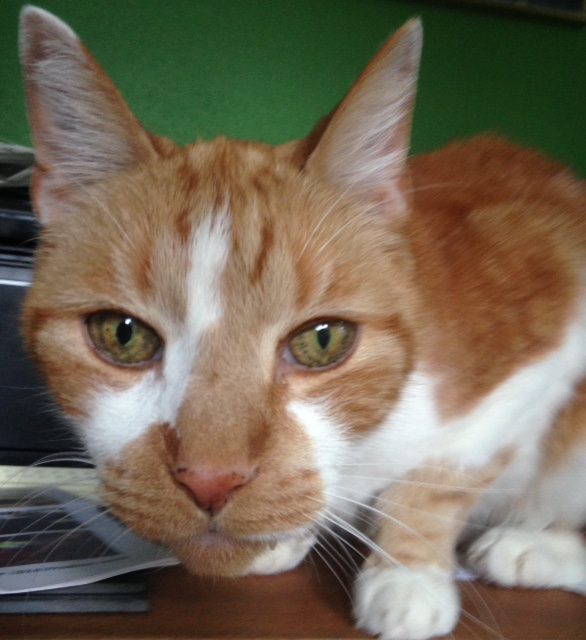

I studied design at UT, but never really had any school spirit. My parents had more school spirit than me. They are true Texans. They live out in the country and have a giant Texas flag painted on their garage door. They even named one of my brothers Stevie Ray. My parents have always enjoyed seeing live music and took the family to concerts. My first concert was Kenny Wayne Shepard at an animal shelter in San Antonio. My parents' love for blues and classic rock influenced my musical tastes. I love listening to classic rock on long road trips.
All time favorites would be:
Currently, I've been listening to Tame Impala, Kurt Vile and BB King. My favorite radio show is Sun and Scorpio on Koop 91.7.